Curriculum/Materials scienceMSE 301
Thermodynamics and CALPHAD
Before asking how fast anything happens, ask what is stable. The CALPHAD method turns measured and computed thermodynamic data into models of the Gibbs energy of every phase, and from those models any equilibrium can be calculated for any composition.
- Reading time
- about 12 min
- Level
- Year 3: advanced theory
- State the condition for equilibrium in terms of Gibbs energy and chemical potentials.
- Write the Gibbs energy of ideal and regular solutions and predict a miscibility gap.
- Construct the common tangent and apply the lever rule.
- Describe how CALPHAD models phases, and list what the method can and cannot calculate.
1. Equilibrium and Gibbs energy#
At constant temperature T and pressure p, a closed system is at equilibrium when its Gibbs energy is a minimum:
G = H − TS = U + pV − TSThe enthalpy H favours strong bonding and the entropy term −TS favours disorder, and rising temperature shifts the balance toward entropy. For a multicomponent system the contribution of each component is its chemical potential μi = (∂G/∂ni)T,p,nj≠i. Equilibrium between phases then requires that each component has the same chemical potential in every phase in which it is present:
μiα = μiβ = … for every component iThe Gibbs phase rule counts how many variables may be changed independently: F = C − P + 2 with pressure free, or F = C − P + 1 at fixed pressure, where C is the number of components and P the number of phases. In a binary alloy at constant pressure, three phases can coexist only at one temperature (F = 0), which is why eutectic, eutectoid and peritectic reactions occur at fixed temperatures.
2. Mixing and solution models#
The Gibbs energy of one mole of a binary solution of A and B is built from three parts:
G = xA GA0 + xB GB0 + ΔGmix, ΔGmix = RT (xA ln xA + xB ln xB) + GexThe first two terms are the pure components in the same structure; the logarithmic term is the ideal entropy of mixing (−RΣx ln x per mole), always favouring mixing and with infinite slope at the pure ends, which is why no phase is perfectly pure; and Gex is the excess Gibbs energy that collects all non-ideal interactions. The simplest form is the regular solution Gex = ΩxAxB, where Ω > 0 means unlike neighbours are disfavoured (tendency to separate) and Ω < 0 means they are favoured (tendency to order or form compounds).
The activity ai = exp[(μi − μi0)/RT] = γixi measures the effective concentration. The activity coefficient γi equals 1 for an ideal solution; Raoult’s law holds for the solvent and Henry’s law (ai ∝ xi) for a dilute solute, with γ constant but not 1.
3. Common tangent and stability#
For a regular solution with Ω > 0 the shape of the Gibbs energy curve changes with temperature: at high temperature the entropy term wins and the curve has a single minimum, while at low temperature the curve has two minima separated by a hump. Watch it happen in the animation: the cooling solution develops a miscibility gap.

This interactive demo needs JavaScript to run.
For a regular solution the critical (consolute) temperature, above which the gap closes, is
Tc = Ω / (2R)Below Tc an alloy of intermediate composition lowers its Gibbs energy by splitting into two phases. The compositions of the two phases are found by the common tangent construction: draw the line that touches the curve at two points. The tangent condition is exactly equal chemical potentials in the two phases (the intercepts of the tangent with the pure-component axes are μA and μB). For a binary mixture of overall composition x0 splitting into phases of compositions xα and xβ, the lever rule gives the fractions:
fβ = (x0 − xα) / (xβ − xα), fα = 1 − fβBinodal and spinodal
Within the gap there are two kinds of instability. Between the common-tangent points (the binodal) the two-phase state is stable, but a homogeneous solution may still be locally stable and decompose only after nucleation of a second phase. Inside the spinodal, where ∂²G/∂x² < 0, the solution is unstable to any small composition fluctuation and decomposes spontaneously. The distinction matters for kinetics and for simulation: the spinodal mechanism is the one modelled in the phase-field topic.
4. Reading phase diagrams#
A binary phase diagram is a map of the stable phases against temperature and composition, produced by repeating the common-tangent construction at each temperature. Boundaries are loci of tangent points. A few conventions let you read any diagram:
- In a single-phase region, the phase composition equals the overall composition.
- In a two-phase region, draw a horizontal tie line at the temperature; its ends on the phase boundaries give the phase compositions, and the lever rule gives the amounts.
- Three-phase equilibria appear as horizontal lines (invariant reactions): eutectic L → α + β, eutectoid γ → α + β, peritectic L + α → β.
- Ternary systems are shown as isothermal sections or vertical sections (isopleths); tie lines in a ternary two-phase region do not generally lie along a fixed direction, which is why calculation is needed.
The iron–carbon system illustrates the points. The eutectoid at about 727 °C and 0.76 wt% C converts austenite (fcc) into ferrite (bcc, almost no carbon) and cementite (Fe3C, 6.67 wt% C). A 0.40 wt% C steel just below 727 °C contains, by the lever rule, a cementite fraction of (0.40 − 0.02)/(6.67 − 0.02) ≈ 5.7%. Note that Fe–Fe3C is a metastable diagram: graphite is the true equilibrium phase, but cementite forms because its nucleation is much easier.
5. The CALPHAD method#
Phase diagrams were originally drawn from measurements alone. CALPHAD (CALculation of PHAse Diagrams, developed from the 1970s, building on Kaufman and Bernstein) replaces drawing with modelling: every phase gets an analytical expression for its Gibbs energy as a function of T, p and composition, with adjustable parameters. The workflow is:
- Collect data for the system: phase boundaries, invariant temperatures, heats of formation and mixing, activities, heat capacities, plus first-principles (DFT) formation energies for compounds that are hard to measure.
- Choose models for each phase that match its crystal structure and chemistry (Section 6).
- Optimise parameters so that the combined calculation reproduces all data within experimental uncertainty. Binary systems are assessed first, then ternaries, and the models are extrapolated to higher-order systems.
- Store the parameters in a thermodynamic database. The common exchange format is the TDB text file, readable by several programs.
- Calculate equilibria by minimising total Gibbs energy under the imposed conditions.
The strength of the approach is that the same expression describes stable and metastable states and extends into regions that were never measured; its weakness is that the result is only as good as the assessment (Section 9).
6. Models inside a database#
Pure elements
Each element in each structure (even structures it never adopts, such as bcc for a metal that is hcp) has a Gibbs energy function written as a polynomial in T, relative to a reference state. The SGTE unary database, a community standard, supplies these lattice stabilities in the form
G(T) = a + bT + cT ln T + dT² + eT−1 + fT³ + …Substitutional solutions
Solution phases with atoms mixing on one set of sites are written as the sum of the three terms in Section 2, with the excess term expanded in a Redlich–Kister polynomial:
Gex = xA xB Σk kLAB (xA − xB)k, kL = ak + bkTThe term with k = 0 is the regular-solution parameter; k = 1 introduces asymmetry. The parameters ak and bk are the quantities fitted during assessment. Higher-order systems add ternary interaction terms, and binary data are extrapolated to ternaries with symmetric or asymmetric schemes (Muggianu, Kohler, Toop).
Sublattice models
Interstitial solutions and compounds with more than one type of site are written with the compound energy formalism (Hillert and Staffansson). Each sublattice has its own set of species, including vacancies (Va). For austenite or ferrite in the Fe–C system, carbon occupies interstitial sites that are mostly empty, giving the model (Fe)a(C, Va)c, with a = c = 1 for fcc and a = 1, c = 3 for bcc. Intermetallics such as Fe3C or sigma phase use sublattices with composition-dependent occupancy, and a stoichiometric compound is the limiting case with fixed site fractions.
Magnetism and ordering
Ferromagnetic transitions change the Gibbs energy by an amount large enough to move phase boundaries (it is why iron is bcc at low temperature and fcc between about 912 and 1394 °C). They are included with a separate magnetic term based on the Curie temperature and the Bohr magneton number (Inden–Hillert–Jarl model). Chemical ordering, for example B2 from bcc, is handled by using the same Gibbs energy for the ordered and disordered phases with an additional sublattice description for the ordered state.
7. What can be calculated#
| Calculation | What it gives | Typical use |
|---|---|---|
| Equilibrium at fixed T, p, composition | Stable phases, their amounts and compositions | Heat treatment windows, solubility limits, second-phase amounts |
| Property diagram (phase fraction versus T) | Transformation temperatures, fraction curves | Solvus, solidus and liquidus; Ae1 and Ae3 of steels |
| Phase diagram and isopleth | Phase boundaries in a plane of composition and T | Alloy design; checking the effect of a new addition |
| Scheil–Gulliver solidification | Solidification path assuming no diffusion in the solid and complete mixing in the liquid | Segregation, last-liquid composition, hot-cracking tendency |
| Constrained equilibrium (for example paraequilibrium) | Equilibrium with some elements held fixed, such as interstitial carbon moving while substitutional atoms do not | Fast transformations, bainite and martensite thermodynamics |
| Driving force | Gibbs energy change for forming a new phase from the current state | Nucleation models; precipitation and phase-field inputs |
| Activities and chemical potentials | Effective concentrations | Slag–metal reactions, oxidation, diffusion couples |
8. A short calculation#
The open-source Python package pycalphad calculates equilibria from a TDB database. The sketch below finds the equilibrium phases of a 2 at.% carbon iron alloy over a temperature range, assuming you have a suitable Fe–C database file:
from pycalphad import Database, equilibrium, variables as v
dbf = Database("Fe-C.tdb") # your thermodynamic database
comps = ["FE", "C", "VA"]
phases = ["LIQUID", "BCC_A2", "FCC_A1", "CEMENTITE"]
eq = equilibrium(
dbf, comps, phases,
{v.X("C"): 0.02, v.T: (600, 1800, 10), v.P: 101325, v.N: 1},
)
# eq.Phase, eq.NP (phase fractions) and eq.X (compositions) vs temperaturePhase names depend on the database. A database is licensed data: some are free and published with the assessment, others are commercial. Always check which composition and temperature ranges a database was assessed for before trusting an answer outside them.
9. Limits and coupling#
- Equilibrium only. CALPHAD has no time, geometry or interfaces. It says where a system is heading, not how fast or in what shape.
- Database quality. Parameters are fitted to the data that existed; predictions outside the assessed range, or for a phase with sparse data, rest on extrapolation. A ternary or higher-order prediction made from binary data alone can be wrong when real ternary interactions are strong.
- Missing phases. If a phase is absent from the database (or from your list of candidate phases), it cannot be predicted. Metastable phases may be included deliberately.
- Local equilibrium assumption. Used in diffusion calculations, it holds when interfaces are fast compared with diffusion.
Coupling extends what CALPHAD can do. Diffusion mobility databases assessed in the same way as thermodynamics (used in DICTRA and similar programs) enable one-dimensional simulation of diffusion-controlled transformations and homogenisation. Phase-field models take their free-energy densities, driving forces and chemical potentials from CALPHAD. DFT supplies formation energies of compounds and end-member energies. The thermodynamic input of larger models is therefore often a CALPHAD calculation.
- Equilibrium means minimum Gibbs energy, equivalently equal chemical potentials. The common tangent gives phase compositions and the lever rule gives amounts.
- For a regular solution the miscibility gap closes at Tc = Omega/2R; the spinodal lies inside the binodal.
- CALPHAD fits a Gibbs energy model to every phase (Redlich-Kister terms, sublattices, magnetism) and stores the parameters in a database.
- It delivers equilibria, solidification paths and driving forces. It does not deliver kinetics or geometry.
- Database coverage limits accuracy, and multicomponent extrapolation from binary data needs checking.
10. Check your understanding#
A regular solution has Ω = 20 kJ/mol. At what temperature does the miscibility gap close?
Tc = Ω/(2R) = 20 000/(2 × 8.314) ≈ 1 200 K.
An alloy with 30 at.% B splits into phases of 10 at.% and 70 at.% B. What fraction is the B-rich phase?
Lever rule: (30 − 10)/(70 − 10) = 20/60 ≈ 33%.
Why does the ideal entropy of mixing make perfectly pure phases impossible?
The slope of RT(x ln x + (1 − x) ln(1 − x)) is infinite at x = 0 and x = 1, so adding even a tiny amount of a second component always lowers the Gibbs energy. Every real phase therefore dissolves some of every component, however small.
11. References and further reading#
- Lukas, H. L., Fries, S. G. and Sundman, B., Computational Thermodynamics: The Calphad Method, Cambridge University Press (2007).
- Saunders, N. and Miodownik, A. P., CALPHAD: Calculation of Phase Diagrams, Pergamon (1998).
- Hillert, M., Phase Equilibria, Phase Diagrams and Phase Transformations, Cambridge University Press.
- Gaskell, D. R. and Laughlin, D. E., Introduction to the Thermodynamics of Materials, CRC Press.
- Kaufman, L. and Bernstein, H., Computer Calculation of Phase Diagrams, Academic Press (1970).
- Dinsdale, A. T., SGTE data for pure elements, Calphad 15, 317 (1991).
- Hillert, M. and Staffansson, L.-I., The regular solution model for stoichiometric phases and ionic melts, Acta Chem. Scand. 24, 3618 (1970).
- Otis, R. and Liu, Z.-K., pycalphad: CALPHAD-based computational thermodynamics in Python, J. Open Res. Softw. 5, 1 (2017).
- Bocklund, B. et al., ESPEI for efficient thermodynamic database development, modification and uncertainty quantification, MRS Commun. 9, 618 (2019).